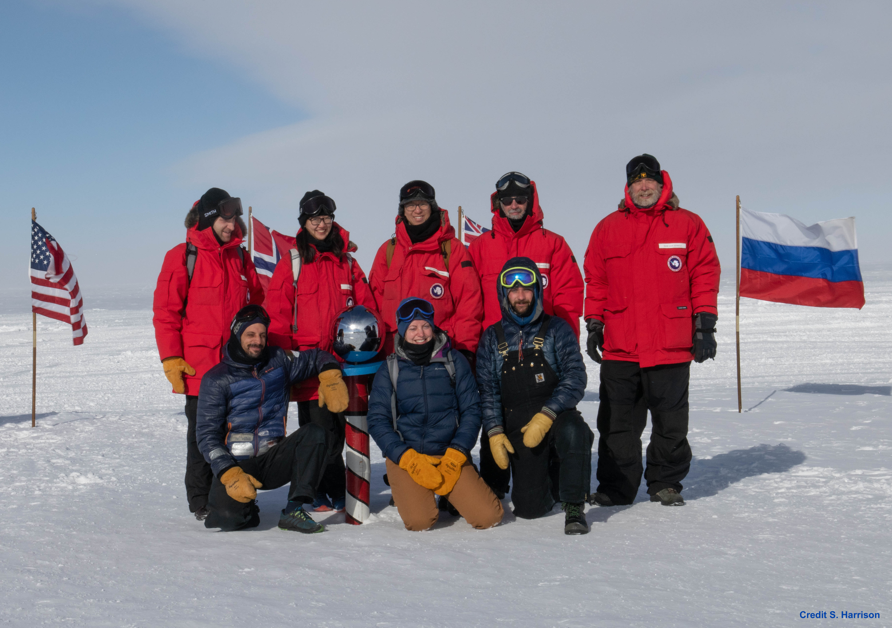

The Pole as a Unique Observing Site
Ground-based Cosmic Microwave Background measurements require observing sites where the atmosphere is minimally absorptive to millimeter wavelengths. Well-mixed, exceptionally low levels of residual water vapor make the South Pole the best location for sensitive measurements of CMB polarization. With observing fields continuously available at constant elevation, data-taking runs uninterrupted throughout the austral winter. During that time the site is inaccessible; dedicated winter-over scientists remain on station to operate the BICEP3 and BICEP Array telescopes, queue observations, and troubleshoot hardware or software issues as they arise.
